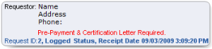

The Comments form enables you to view all comments associated with or to add comments to the currently selected request.
To open the form
Note: You can also access this form after you save a new request.
Item descriptions
Note: Date and time format are controlled by the regional settings of your operating system.
Requestor information box

Identifies the requestor type, the requestor's name and demographic information, and the requirements for pre-payment and certification letters (if any). Also displays the request ID, current status, and receipt date and time.
Enter New Comment
Allows you to enter comments (up to 1000 characters) about the currently selected request.
Save Comment
Saves a newly entered comment and adds it to the comment history.
Enabled only if you have entered at least one character.
Launches a confirmation prompt.
Cancel
Cancels the newly entered comment and discards any text you have entered.
Enabled only if you have entered at least one character.
Author
Displays a list of all users who have authored comments and allows you to select a specific author by which to filter the comments result set.
Defaults to All.
Date
Allows you to identify the date(s) by which to filter the comments result set.
Options are:
Defaults to All.
Comments grid
Lists all comments that match the filter criteria. Also displays the sum of comments that match the filter criteria.
Read-only.
By default, sorted on Date | Time in most recent to oldest order. Can be sorted on all columns. Information includes: